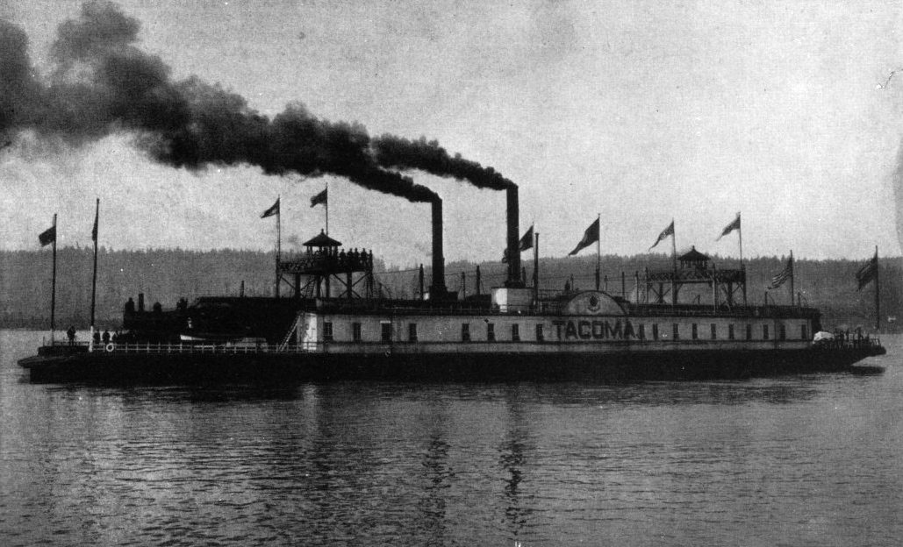
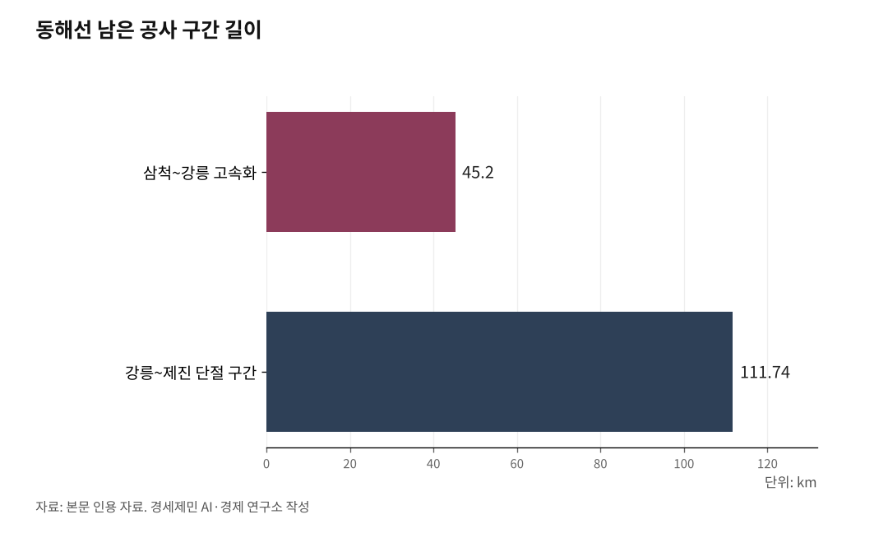

[127년 한국철도⑨] 북녘 철길 끊겼다… 화물열차 통째로 배에 실어 대륙으로
화물은 항만에서 멈추지 않는다, 선로는 대륙으로 이어진다
2024년 북한, 동해선·경의선 남측 연결 끊어… 유라시아 육로 막혔다
바다 위 철길 열차페리… 환적 없이 인천에서 중국 철도망으로
한중 모두 표준궤 1435mm… 웨이하이·롄윈강서 중국횡단철도 직결
인하대 해양AI융합센터 김갑봉 연구교수(물류학)│8편이 항만까지 선로를 댔다면, 9편은 그 선로를 항만 너머로 잇는다. 화물은 부두에서 멈추지 않는다. 한국 짐의 대부분은 바다 건너 대륙으로 간다. 그 짐을 철도에 실으려면, 선로가 한반도를 넘어야 한다. 길은 둘이다. 북으로 난 육로, 바다 위로 난 철길이다.

1. 막힌 북녘
먼저 육로다. 부산을 떠난 열차가 서울을 지나 북녘을 통과하면, 시베리아횡단철도(TSR, Trans-Siberian Railway)와 중국횡단철도(TCR, Trans-China Railway)에 닿는다. 한반도종단철도(TKR, Trans-Korean Railway)가 유라시아로 이어지는 그림이다. 부산항의 짐이 레일만으로 유럽까지 갈 수 있다.
그림은 멈춰 섰다. 경의선 도라산~개성, 동해선의 군사분계선 구간은 끊긴 지 오래다. 남은 끈마저 북한이 잘랐다. 2024년 8월 동해선·경의선 철도를 차단했고, 10월 15일에는 군사분계선 이북 남북 연결도로를 폭파해 육로를 완전히 끊었다. 대륙길은 더 멀어졌다.
그래도 남녘은 채비를 갖춘다. 동해안 철도망의 유일한 저속 구간이던 삼척~강릉 45.2km 고속화 사업이 2026년 2월 예비타당성조사를 통과했다. 사업비 1조1507억원을 들여 시속 60~70km 거북이 구간을 걷어낸다. 마지막 단절 구간 강릉~제진 111.74km도 2021년 착공해 2027년 말 개통을 바라본다. 부산에서 북쪽 끝 제진까지 동해선이 곧게 뚫리면, 북녘이 열리는 날 곧장 대륙으로 향한다.

2. 바다 위 철길
북녘을 기다리는 동안, 다른 길이 있다. 바다 위 철길, 열차페리다. 화물열차를 통째로 배에 실어 바다를 건넌다. 컨테이너를 부두에서 내렸다 다시 싣는 환적이 없다. 배에서 내린 화차가 곧장 상대국 선로를 달린다. 시간과 비용이 준다.
3. 환황해, 인천에서 대륙으로
무대는 황해다. 인천 맞은편이 중국 산둥반도다. 1990년 한중 첫 카페리 항로가 열린 인천~웨이하이 뱃길엔 지금도 여객선이 정기로 오간다. 산둥반도 끝이라 한국에서 가장 가깝다.
더 멀리도 닿는다. 롄윈강은 중국횡단철도(TCR)의 동쪽 기점이다. 신유라시아대륙교의 동쪽 교두보로, TCR 화물의 약 90%가 이곳에서 떠난다. 여기서 화차는 시안과 우루무치를 지나 중앙아시아를 거쳐 유럽으로 향한다.
결정적인 것은 궤간이다. 한국과 중국은 모두 표준궤 1435mm를 쓴다. 인천에서 실은 화차가 웨이하이나 롄윈강에 내리면, 대차를 갈아 끼우지 않고 그대로 중국 철도망을 달린다. 환황해 철길이 막힌 북녘을 에둘러 대륙에 닿는다.
4. 먼저 바다로
북녘 육로는 정세가 풀려야 열린다. 그날을 기다리되, 손 놓고 있을 일은 아니다. 열차페리는 지금 깔 수 있다. 인천신항에 인입선을 대고 황해 건너 중국 항만과 화차를 주고받으면, 한국 짐이 부두에서 곧장 대륙으로 흐른다.
바닷길은 이미 열려 있다. 인천에서 친황다오를 거쳐 몽골 자민우드까지 씨앤레일(Sea&Rail) 화물이 오간다. 여기에 환적을 없앤 열차페리를 얹으면 흐름은 더 빨라진다. 막힌 북쪽 대신, 바다로 먼저 대륙에 닿는 길이다.
대륙으로 가는 화물도, 안에서 도는 여객도 같은 선로를 빌린다. 그 선로가 언제 비는지가 다음 과제다. 다음 편에서 잠들지 않는 철로를 짚는다.
※ 이 기사는 AI 프로그램 클로드를 활용해 작성했습니다.
참고문헌
· 서울신문, "[속보] 합참 '북한, 경의선·동해선 남북 연결도로 폭파'", 2024.10.15. https://www.seoul.co.kr/news/politics/north/2024/10/15/20241015500068
· 서울신문, "동해선 철도 '거북이 구간' 사라진다…삼척~강릉 고속화 예타 통과", 2026.02.12. https://www.seoul.co.kr/news/society/2026/02/12/20260212500344
· 철도경제신문, "'동해선 유일 저속구간' 삼척~강릉 고속화 예타 통과…1조 1500억 투입", 2026.02. https://www.redaily.co.kr/news/articleView.html?idxno=15670
· 국토교통부, "한반도 평화·번영 위한 동해선축 유일한 단절구간 '강릉~제진' 착공", 2022.01.05. http://www.molit.go.kr/USR/NEWS/m_72/dtl.jsp?id=95086414
· 파이낸셜뉴스, "동해선 마지막 단절구간 '강릉~제진' 잇는다…남북철도 연결 의지(종합)", 2022.01.05. https://www.fnnews.com/news/202201051450553586
· 한국교통연구원(KOTI), "중국 횡단철도(TCR) 현황"(안병민 외, 대륙횡단철도 운영현황 조사연구, 2004). https://www.koti.re.kr/user/bbs/northAsiaRsrchBoardView.do?bbs_no=49923
· 인천투데이, "[문명의 궤도, 철도⑧] 열차페리로 여는 한반도-유라시아 철도 연결". https://www.incheontoday.com/news/articleView.html?idxno=307103
· 인천투데이, "인천항-친황다오-몽골 열차페리 확대 컨테이너 운송 10일 주파". https://www.incheontoday.com/news/articleView.html?idxno=301534
· 인천항만공사, "국제여객선사 안내 — 인천~웨이하이(위동항운)". https://www.icpa.or.kr/icferry/content/view.do?menuKey=940&contentKey=9
사진 출처
· [대표사진] Unknown authorUnknown author, "Tacoma (rail ferry).jpg", 위키미디어 공용, 퍼블릭 도메인, https://commons.wikimedia.org/wiki/File:Tacoma_(rail_ferry).jpg
※ 이 기사는 인공지능을 활용해 작성했습니다.
관련기사
- [127년 한국철도⑧] 철도화물 1%, OECD 꼴찌… 항만·산단에 선로를 대라
- [127년 한국철도⑩] 꽉 찬 경부고속선, 하루 190회가 한계… 증설과 재설계, 둘 다 급하다
- [127년 한국철도⑪] 빅3만 흑자, 11곳은 적자… 짧은 하늘길은 철도가 지운다
- [127년 한국철도⑫] 세계 3위 인천공항, 제2공항철도로 부산·목포까지 KTX 직결하라
저작권자 © AI경세제민 무단전재 및 재배포, AI학습 및 활용 금지